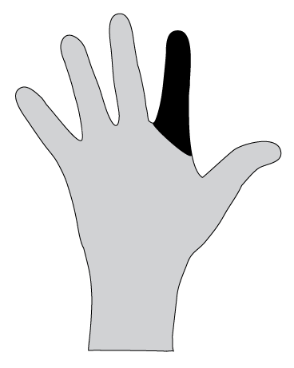
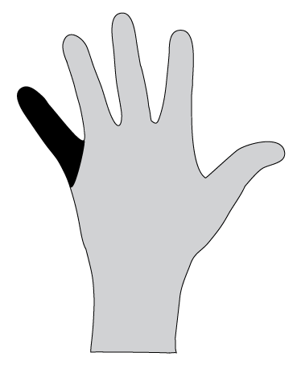

Boża historia (pięć palców)
1. Bogu interesuje się tobą
(Kciuk: Najważniejsze)
- Bóg stworzył nas, po to żebyśmy mogli żyć razem z nim w więzi pełnej miłości.
- Chce dać ci dar – pytanie brzmi: Co z nim zrobisz?
2. Problem: Nie robimy tego, czego chce Bóg

(Palec wskazujący: Wskazujemy nim na innych z oskarżeniem albo obwinianiem, ale problem jest po naszej stronie)
- W naszym życiu jest poważny problem: Grzech.
- "Czym jest grzech?" Kradzież, kłamstwo, zabójstwo ... (złamanie któregoś z 10 przykazań) jest grzechem.
- Ale Boży standard jest jeszcze wyższy:
- Kiedy myślimy o kimś źle - to już jest grzech.
- Jeśli masz możliwość zrobić coś dobrego, ale nie robisz tego - to też jest grzech.
- Skąd się bierze grzech: myślenie, że wiemy lepiej niż Bóg, ignorowanie Go i odrzucanie Jego miłości.
- Bóg jest święty i pragnie, żebyśmy byli doskonali.
- Wyobraź sobie, że ktoś nakręcił film ze wszystkimi twoimi grzechami: wszystkie twoje złośliwości, wszystkie nieczyste myśli i wszystkie te chwile, w których myślałeś, że nikt nie widzi. Jak czułbyś się, gdyby ten film ukazał się publicznie i inni by go zobaczyli?
- Bóg nie ignoruje takich rzeczy, konsekwencją grzechu jest kara.
- Nasze grzechy powodują, że upadamy, umieramy duchowo i jesteśmy oddzieleni od Boga.
Boże rozwiązanie: Jezus Chrystus zapłacił cenę za nasz grzech
(Palec środkowy, najdłuższy: symbolizuje krzyż, na którym umarł Jezus)
- Jak Bóg może być pełen miłości i równocześnie być sędzią, który karze za grzech? Jak to do siebie pasuje?
- Bóg przygotował rozwiązanie, a jest nim Jego Syn, Jezus Chrystus.
- Przyszedł na świat, żył doskonałym życiem, uzdrawiał wielu ludzi.
- Jego wrogowie zaaresztowali Go, bili i zabili na krzyżu.
- Ale On po trzech dniach powrócił do życia!
- On wziął na siebie karę, dzięki czemu my możemy otrzymać przebaczenie!
- Ilustracja: Bliźniacy
4. Bóg chce mieć z nami bliską osobistą więź
(Palec serdeczny: Więź z Bogiem)
- Bóg zrobił wszystko potrzebne do odnowienia więzi z człowiekiem. On przygotował dla Ciebie nowe życie, które nigdy się nie skończy.
- Teraz to Ty musisz podjąć decyzję: Czy przyjmiesz to, co dla Ciebie przygotował?.
- Ale musimy wiedzieć, że ta decyzja ma swoje konsekwencje. Oznacza ona decyzję o pozostawieniu twojego starego życia i rozpoczęcie nowego, takiego, jakim żył Jezus.
- Wyrażamy tę decyzję poprzez odwrócenie się od naszych grzechów i pozwolenie Jezusowi, żeby nas oczyścił.
- To jest tak, jak powiedzieć "tak" na ślubie. Kiedy powiesz "tak", Bóg również powie Tobie "tak". On chce mówić do Ciebie, dawać Ci to, czego potrzebujesz oraz żyć razem z Tobą!
5. Duch Święty będzie Cię wspierał

(Mały palec: Możliwość wzrostu)
- Kiedy przyjmujemy Bożą propozycję, On napełnia nas swoim Duchem.
- Ten "Święty Duch" jest jak moc Boża dla Ciebie. Pokazuje Ci, co robić, przemienia Twoje słabości i pomaga żyć jak Jezus.
- Inni ludzie posiadający Ducha Świętego będą cię wspierać i uczyć cię rozumieć lepiej Boga i robić to, czego On chce.
Bliźniacy
W pewnym mieście żyli dwaj bracia - identyczni bliźniacy. Jeden z nich jako nastolatek zszedł na złą drogę. Dołączył do lokalnej grupy przestępczej, zerwał kontakt z rodziną. Doszło do tego, że został mordercą. W czasie napadu zastrzelił człowieka, który stanął mu na drodze. Złapany przez policję, trafił przed oblicze sądu, tam zobaczył swojego brata, po raz pierwszy po wielu latach. To on był sędzią! Z początku ucieszył się! "To mój brat", pomyślał oskarżony, "pewnie dalej mnie kocha! Wyciągnie mnie z tego!"
Jego brat, sędzia wydał wyrok - kara śmierci! Brat przestępca był wściekły. "Dlaczego tak surowo?" zapytał "To nie jest miłość!" Ale sędzia po prostu trzymał się litery prawa aby sprawiedliwości stała się zadość.
Skazany brat oczekiwał w celi śmierci na wykonanie wyroku. Nagle, w środku nocy, otwarto drzwi do jego celi. Stał w nich jego bliźniak! Na początku był zły na niego. "Dlaczego skazałeś mnie na śmierć?!" zarzucił.
"Musiałem, jestem sprawiedliwy. Ale mam propozycję. Wyglądamy tak samo. Zamieńmy się ubraniami, ty wychodź, a ja tu zostanę."
"Doskonale", zawołał jego brat, i wyszedł z więzienia. Był taki szczęśliwy, że całą noc świętował. Nad ranem przypomniał sobie, że o godzinie 9 miała odbyć się egzekucja. Podszedł pod mury więzienia i usłyszał wystrzał karabinu! Dotarło do niego, że jego brat przyjął na siebie wyrok, który był przeznaczony dla niego. Przeżył wstrząs. Poszedł do domu swojego brata, a tam znalazł list od niego. Oto treść listu:
"Jesteś wolny. Wziąłem karę na siebie. Chcę, żebyś żył od teraz moim życiem, był uczciwy i pamiętał o tym, co dla ciebie zrobiłem."
Moja odpowiedź na Bożą propozycję
Bóg zrobił swoją część. Teraz kolej na ciebie...
- Czy przyjąłem Boży dar?
- □ Tak □ Nie □ Nie jestem pewien
- Czy jestem pewien tego, że otrzymałem również życie wieczne?
- □ Tak □ Nie □ Nie jestem pewien
- Czy odwróciłem się od grzechu i złego życia?
- □ Tak □ Nie □ tylko trochę
- Czy jestem pewien tego, że otrzymałem Ducha Świętego?
- □ Tak □ Nie □ Nie jestem pewien
Co mnie powstrzymuje?
Czegoś nie rozumiem? Gdzie nie jestem pewien?
Rozmowa z Bogiem: Moje kolejne kroki
Tutaj znajdziesz wskazówki do rozmowy z Bogiem. Przyjdź ze wszystkim, co leży Ci na sercu i co chcesz powiedzieć Bogu. Jeśli nie czujesz się pewny co do niektórych rzeczy, możesz powiedzieć o tym szczerze Bogu. Skorzystaj z pomocy kogoś, kto ma doświadczenie w rozmawianiu z Bogiem.
Boże, które rzeczy w moim życiu nie są takie, jak Ty byś chciał? Od jakich grzechów muszę się odwrócić?
Boże dziękuję, że mogę rozmawiać z Tobą. Zdaję sobie sprawę, że nie żyłem zgodnie z Twoją wolą. Przepraszam. Proszę wybacz mi, że ja _______________________ (nazwij to, co Bóg Ci pokazał).
Jezu dziękuję, że masz rozwiązanie i umarłeś za mnie. Jestem gotów zmienić moje życie i pozbyć się wszystkiego, co Ty nazywasz grzechem. Chcę żyć zgodnie z Twoją wolą.
Duchu Święty proszę pomóż mi w tym. Oczyść mnie i napełnij.
Jeśli możesz powiedzieć to wszystko z głębi serca, poproś aby ktoś wytłumaczył Ci na czym polega rozpoczęcie tego nowego życia (zobacz arkusz "Chrzest").